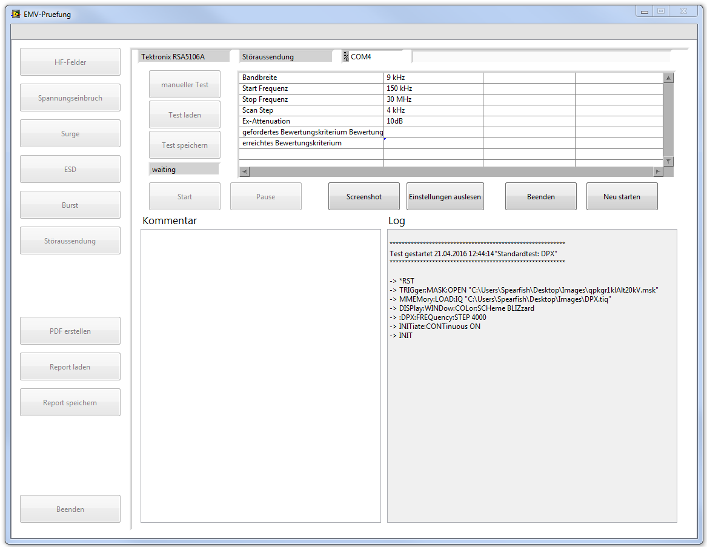
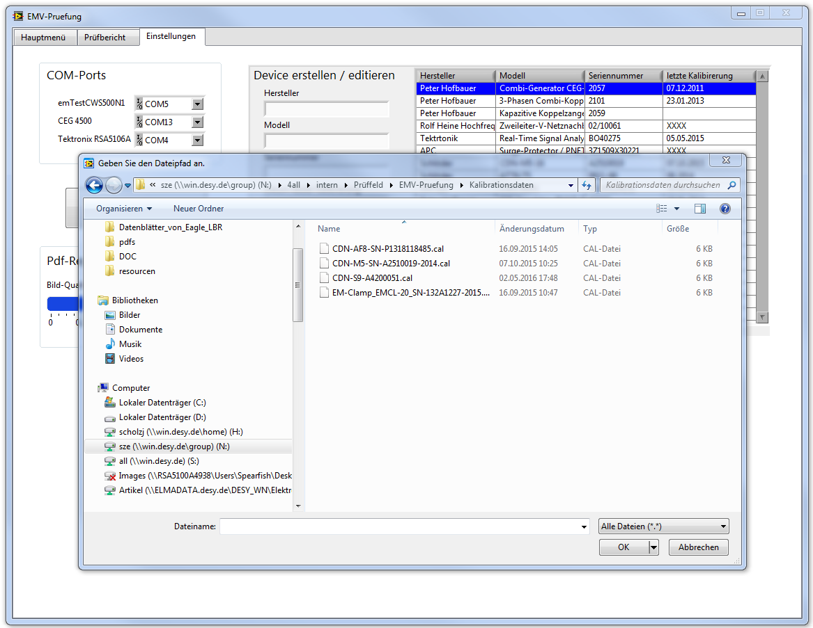

unterstützte Erstellung von EMV-Prüfberichten mittels Labview
automatische Ansteuerung
Die Ansteuerung der Prüfgeräte wird durch das Programm übernommen
PDF export
Der Prüfprozess kann als PDF-Datei exportiert werden
Fortschritte speichern
Der Prüfer kann den Prüffortschritt abspeichern und zu einem späteren Zeitpunkt vortführen
Programmstart
Im ersten Fenster wird der Name des Prüfers, die Artikelnummer (Orderbase) und der Name der Baugruppe angegeben.
Programmstart
Im ersten Fenster wird der Name des Prüfers, die Artikelnummer (Orderbase) und der Name der Baugruppe angegeben.
Hauptmenü
Das Hauptmenü bietet dem Anwender eine Vielzahl von Optionen, die nun im einzelnen vorgestellt werden.
Versuchsaufbau
Wenn noch kein Versuchsaufbau für einen Test hinterlegt ist muss dieser angelegt werden.
Geräte Datenbank
In der Datei devices.json, im gleichen Verzeichnis wie die Executable des Programms, sind bereits erfasste Geräte mit Seriennummer, Modell, Hersteller und dem letzten Kalibrierungsdatum abgelegt.
EMV-Prüfung

Sobald einer der Sechs Buttons für Tests unter der gewünschten Norm betätigt wurde, wird im rechten Teil des Hauptmenüs das Programm zur Durchführung des Tests aufgerufen. In diesem Fall handelt es sich um Störaussendung mit dem Gerät RSA5106A. Man hat nun die Möglichkeit einen eigenen Test zu erstellen oder einen bereits gespeicherten Test zu laden. Für Tests mit dem Gerät RSA5106A ist es nicht sinnvoll benutzerdefinierte Test anzulegen da Einstellungen direkt an dem Gerät vorgenommen werden während der Prüfung.
Protokollierung
Ergebnisse protokollieren Ist ein Test fertiggestellt kann das Ergbeniss des Tests aufgenommen werden. Die Parameter aus dem Test-Programm werden hierher übernommen, es ist möglich sie hier nochmals zu bearbeiten. Es ist nun außerdem möglich Bilder für diesen Test zu hinterlegen falls es sinnvoll erscheint. Wenn der Knopf Bild gedrückt wird erscheint ein Dateidialog mitdem ein Bild ausgewählt werden kann. Es muss außerdem eine Bildunterschrifft gewählt werden.
Bearbeitung von Prüfdaten
Daten einsehen Unter dem zweiten Reiter "Prüfbericht" sind die bisher gesammelten Daten der Prüfung sichtbar gemacht. Unter einer Norm (z.B. Surge, Burst etc.) sind einmal der Versuchsaufbau und ein oder mehrere Tests abgelegt. Es ist möglich den Versuchsaufbau oder die einzelnen Tests nachträglich zu bearbeiten. Hierzu wählt man den entsprechenden Knoten an und drückt Enter oder Return.
Einstellungen

Im rechten Reiter "Einstellungen" können die Com-Ports den angeschlossenen Geräte zugewiesen werden. Weiter ist es möglich Kalibirerungsdaten für CDN's für das Gerät CWS 500N1 abzuspeichern und zu laden.
Kontakt
Sind noch Fragen offen? Kontaktieren Sie mich gerne per Mail